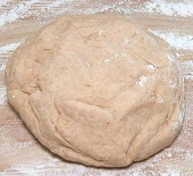

This 16 inch Lefse griddle was used for the example breads,
and could easily handle three at a time. In Africa, it would probably made
on a Tava, a circular sheet of iron over a wood fire, but that takes a lot
of experience to get the temperatures right. A regular 12 inch iron skillet
would work if well seasoned, or a heavy non-stick pan of similar size. The
cover is not used for this bread. I suggest you have an Infrared Thermometer
for accurate temperature control. For details on the photo pan see our
Lefse Griddle page.
To safely handle this bread, you should use a wide turner
like the Oxo examples in the photo to the left. I use the wide one, but
this bread is quite durable, so the narrow one would work. If not using
a non-stick pan, you can use plain metal turners.

This dough has been fully mixed in a large pan, and is now on
the board ready for kneading to begin. Weighs about 2-1/2 pounds, it can be
handled without sticking. Kneading will take 15 minutes by hand, or about 5
minutes in a powerful stand mixer with a dough hook.
Here the Dough, after completion of the kneading step, has
been cut into 8 pieces of about the same size.
Here the 8 pieces of Dough, have been formed into balls and
are ready to be rolled out.
Dough rolled out to about 1/4 inch thick and 9 inches long.
Brushing the top surface with oil.
Dough, folded in half once, oiled again on top, and folded
in half again.
Folded Dough, rolled out to 1/4 inch thick.
I wasn't happy with the elongated shape, so I oiled the top
again, folded again, and rolled out again.
Here are three Sabaayad on the griddle. Note that the top
layer is puffed up, so they are ready to turn over.